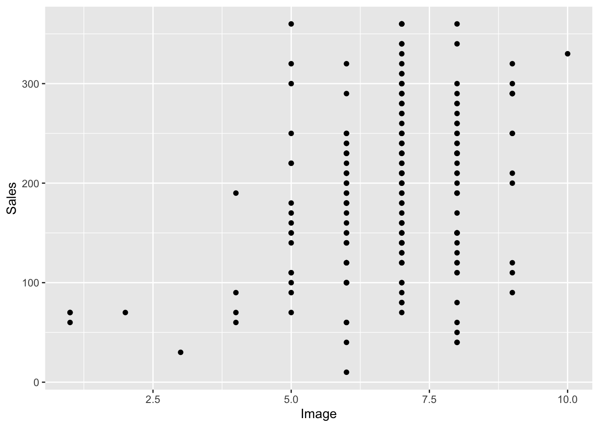
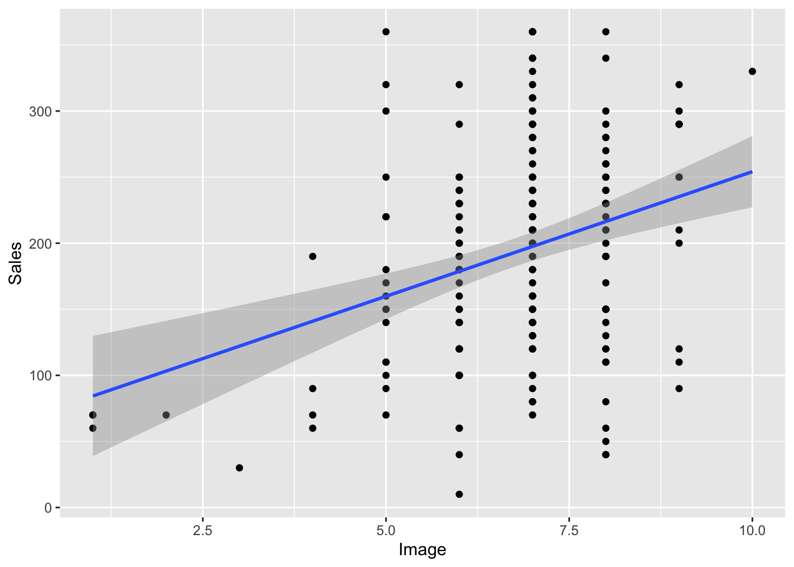
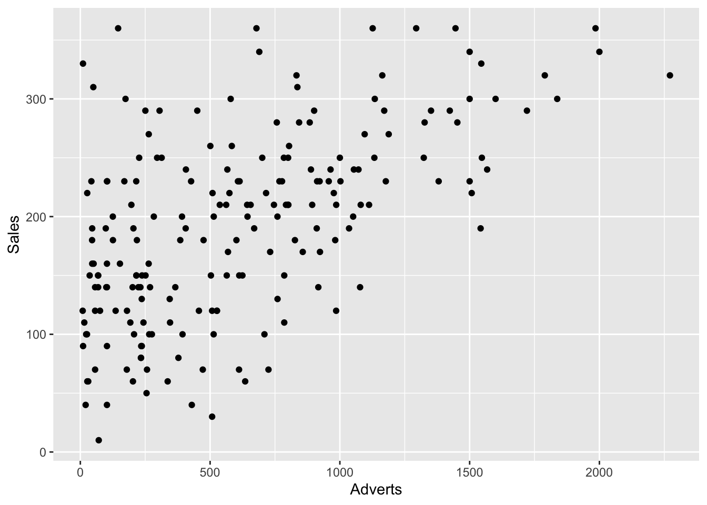
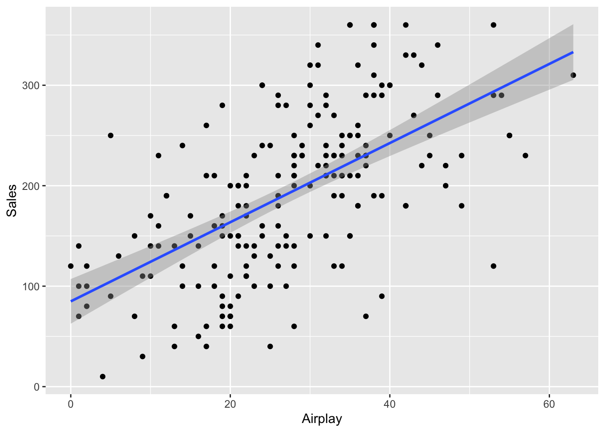

Correlation
James Van Slyke
One of the first tests we can use to look at the relationship between two variables is correlation. Correlation usually requires two continuous numerical variables of some kind.
The basic method for comparison between the two variables is variance, which we learned when looking at descriptive statisitics. Remember that variance is a measurement of data dispersion or spread. More specifically it refers to the average amount that data varies from the mean. So what correlation ultimately analyses is whether 2 variables vary in a similar way. Remember here’s the formula for variance. \[ variance(s^2)=\frac{\Sigma(x-\bar x)^2}{N-1} \] ##Covariance
Since correlation is based on how two variables vary, naturally we are interested in covariance. Covariance is simply variance for two variables. Notice here in the formula that we’ve modified the orinigal variance formula and included our second variable y. So we’ve modified the exponent in the formula for x - the mean and incorporated y. \[ covariance(x,y)=\frac{\Sigma(x-\bar x)(y-\bar y)}{N-1} \] x stands for our first variable and y stands for our second variable, so we are analyzing variance over two variables rather than just one. How does one variable deviate from the mean in comparison to how another variable deviates from the mean? If they deviate (vary) from the mean in a similar way they will be expected to be highly correlated. When there are two variables we can multiply the deviation for one variable by the devation from the second variable. If both deviations are either positive or negative this will give us a positive value, which tells us that the deviations are in the same direction (positive correlation). If the deviations go in opposite directions (one positive and one negative) this will give us a negative value (negative corrleation). Multiplying deviations of one variable by a second variable gets us the cross-product deviation.
At this point the covariance is dependent upon the types of units used to calculate the number. However, we want to standardize this number, which basically means that the number will be in units that are the same across different experiments and the tools they use to measure their variables.In this case to standardize our covariance we use a calculation discussed in descriptive statistics, the standard deviation. This gets us what’s known as Pearson’s r, which was named after the person who developed the calculation Karl Pearson with Florenece Nightingale David doing a lot of the harder mathematical calculations. So hear is the formual for Pearson’s r \[ r = \frac {cov_{xy}}{s_{x}s_{y}}=\frac{\Sigma(x-\bar x)(y-\bar y)}{(N-1)s_{x}s_{y}} \] Notice that the formula is primarily the covariance of x and y divided by the standard deviation of x and y, then this is elaborated is the longer version following the second equal sign where the standard deviation for x and y is added to our original formula for covariance.
Pearon’s r or the correlational coefficient always varies between +1 and -1. As your r value moves closer to +1 that means that both variables are varying in the same direction either both increasing or both descreasing. When your r value is moving closer to -1 that indicates that both scores are varying in opposite directions or as one varible increases the other decreases.
Correlation only describes relationships between variables not causal relationships between variables. It’s not possible to decipher which variable is doing the causal work or which variable is the independent variable and which is the dependent variable. However, correlation can still provide helpful information about variables and we can still use them to test certain types of hypotheses.
To explore correlation futher, let’s look at a particular dataset. Open the dataset labeled album_sakes.csv. Use the Import Dataset command in the upper righthand window and let’s look at the data set.
head(Album_Sales)## # A tibble: 6 × 4
## Adverts Sales Airplay Image
## <dbl> <dbl> <dbl> <dbl>
## 1 10.3 330 43 10
## 2 986. 120 28 7
## 3 1446. 360 35 7
## 4 1188. 270 33 7
## 5 575. 220 44 5
## 6 569. 170 19 5This is a dataset for a record company looking at various variables related to album sales.
- Adverts - Money spent on advertising
- Sales - Sales for various albums
- Airplay - how much airplay each album received
- Attract - How attractive each band was on a 1-10 scale
Next let’s look at the types of variables we have
str(Album_Sales)## tibble [200 × 4] (S3: tbl_df/tbl/data.frame)
## $ Adverts: num [1:200] 10.3 985.7 1445.6 1188.2 574.5 ...
## ..- attr(*, "label")= chr "Advertsing budget (thousands)"
## ..- attr(*, "format.spss")= chr "F8.2"
## $ Sales : num [1:200] 330 120 360 270 220 170 70 210 200 300 ...
## ..- attr(*, "label")= chr "Album sales (thousands)"
## ..- attr(*, "format.spss")= chr "F8.0"
## $ Airplay: num [1:200] 43 28 35 33 44 19 20 22 21 40 ...
## ..- attr(*, "label")= chr "No. of plays on radio"
## ..- attr(*, "format.spss")= chr "F8.0"
## $ Image : num [1:200] 10 7 7 7 5 5 1 9 7 7 ...
## ..- attr(*, "label")= chr "Band image rating (0-10)"
## ..- attr(*, "format.spss")= chr "F8.0"Notice that each of the variables are continuous, either numeric (num) or integer (int), so this is a great dataset for doing correlations.
How would you expect attractiveness of the band to be related to album sales? Unless you’ve been living under a rock or don’t know anything about rock `n roll, attractiveness is a huge part of album sales. Whether your Dua Lipa or BTS, looks matter if your in the entertainment industry. So we should expect that as an artists looks increase, their album sales should increase as well.
Let’s use a graph to first look at this data using a ggplot we learned earlier called a scatterplot. We’ll do a basic one first.
ggplot(Album_Sales, mapping = aes
(x = Image, y = Sales)) + geom_point() So notice that dots lower on the attractiveness scale tend to be associated with less sales, whereas when you look at the dots higher on the attractiveness scales their are more dots that are higher on the sales scale.
Another tool to help us analyze this relationshisp is a regression line. This is a line drawn on the graph that is closest to as many dots or points as possible. You add it like this.
ggplot(Album_Sales, mapping = aes
(x = Image, y = Sales)) + geom_point() +
geom_smooth(method = 'lm')## `geom_smooth()` using formula 'y ~ x'
A regression line is simply using a line to describe the relationship between the two variables. As the line increases in slope or steepness, that indicates a stronger relationship. If the line moves from the lower left to the upper right that indicates a positive correlation whereas if the line moves from the upper left hand corner to the bottom right that indicates a negative correlation. The more the line “flattens” or decreases in slope the less correlation there is between the two variables.
Let’s look at a second variable using the graph to judge which one is more correlated. Use advertising rather than attractiveness this time.
ggplot(Album_Sales, mapping = aes(x = Adverts,
y = Sales)) + geom_point() Notice how most of the dots are gathered in the middle of the graph and moving from lower left to upper right. Notice also that no points are in the bottom right hand corner. So lower sales does not appear to be related to higher amount of advertising. Let’s see the location of the regression line.
ggplot(Album_Sales, mapping = aes(x = Adverts,
y = Sales)) + geom_point() +
geom_smooth(method = 'lm')## `geom_smooth()` using formula 'y ~ x' Notice that the regression line seems slightly steeper on the adverts graph vs. the Image graph. But we can’t be totally sure. So let’s go ahead and use our Pearson’s r correlation coefficient to help us. The formula is really simple, it is just “cor” followed by the two variables you are analyzing.
Notice that the regression line seems slightly steeper on the adverts graph vs. the Image graph. But we can’t be totally sure. So let’s go ahead and use our Pearson’s r correlation coefficient to help us. The formula is really simple, it is just “cor” followed by the two variables you are analyzing.
cor(Album_Sales$Sales, Album_Sales$Image)## [1] 0.3261111Ok, so the correlation between Sales and Attractiveness is .33, now let’s look at Sales and Advertising.
cor(Album_Sales$Sales, Album_Sales$Adverts)## [1] 0.5784877Notice how the corrleation has increased (meaning moved closer to + 1) from .33 to .58. This would seem to justify our hunch that their was a stronger correlation between Sales and Advertising than between Sales and Image (Looks aren’t everything apparently), based on the regression line for each graph.
How to use correlations to test hypotheses
To more formally use correlation to test a hypothesis, let’s look at another variable in the Album Sales dataset, airplay. This is how often a song gets played on the radio (FYI, the radio is an ancient device that old people used to listen to random music played using mysterious spooky radio waves). So your hypothesis would look something like:
There is a correlation between the airplay an album receives and the sales for the album.
The null hypothesis would simply negate the primary hypothesis:
There is no correlation between the airplay an album receives and the sales for the album.
To test the hypothesis we use the “cor.test” command and then specify each of the variables we are analyzing, so it looks like this:
cor.test(Album_Sales$Sales, Album_Sales$Airplay)##
## Pearson's product-moment correlation
##
## data: Album_Sales$Sales and Album_Sales$Airplay
## t = 10.524, df = 198, p-value < 2.2e-16
## alternative hypothesis: true correlation is not equal to 0
## 95 percent confidence interval:
## 0.5018814 0.6810668
## sample estimates:
## cor
## 0.5989188Then write the results using the output including the correlation coefficient, 95% confidence internal, and the p value.
Results There was a significant correlation between the airply an album received and the sales for the album, r = .60, 95% CI [.50, .68], p < .001.
Let’s unpack these results a bit. The correlation is pretty high at .60. Remember that the closer a correlational coefficient is to either +/- 1 the stronger the correlation. We’ve also listed the confidence interval, which means that we are 95% confident that the correlation coefficient is between .50 and .68. The big problem that may show up here is if the CI range includes 0, which would mean that it’s possible that the correlation is zero, thus nullifying our primary hypothesis. The closer this range is the more accurate our correlation estimate and the closer to 1, the stronger the correlation. Finally, our p value is very low, so this shows us that the finding is significant.
Finally, we want to include a scatterplot graph with the regression line to show the relationship we found.
ggplot(Album_Sales, mapping = aes(x = Airplay, y = Sales)) +
geom_point() +
geom_smooth(method = 'lm')## `geom_smooth()` using formula 'y ~ x'